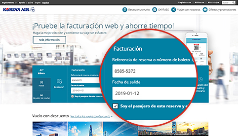
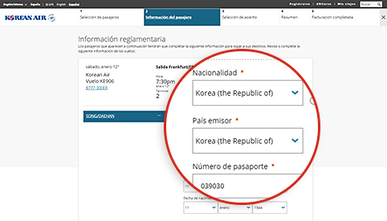
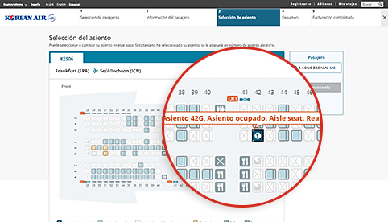
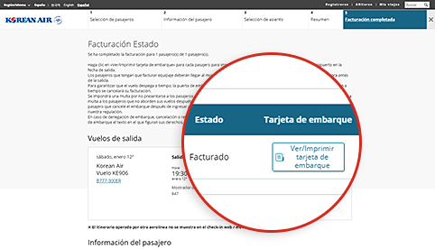

Procedimientos de facturación abreviados. ¡Prepare sus viajes con toda comodidad!
Facturación móvil / web
Le ahorrará tiempo y podrá relajarse una vez que llegue al aeropuerto.
Cómo utilizarlo
| Elegibilidad | Rutas operativas | Horarios de facturación |
|---|---|---|
| Pasajeros que viajen en vuelos de Korean Air con un billete electrónico válido | Todas las rutas |
|
- (Referencia 1) Vuelos desde/hasta EE. UU., Canadá, Reino Unido y París : entre 24 horas y 1 hora antes salida
- Las restricciones de Facturación móvil/web (Haga clic en este enlace para confirmar)
 Asegúrese de disponer de tiempo suficiente para el control de seguridad y otros procedimientos (deberá realizarlos 1 hora antes de la salida en el caso de vuelos internacionales o 20 minutos antes de la salida en el caso de vuelos nacionales)
Asegúrese de disponer de tiempo suficiente para el control de seguridad y otros procedimientos (deberá realizarlos 1 hora antes de la salida en el caso de vuelos internacionales o 20 minutos antes de la salida en el caso de vuelos nacionales)
Cómo hacer la facturación

-

Step 1 Busque su reserva
- Es más sencillo hacer la facturación si ha introducido su número de viajero frecuente durante la reserva.
- Si no se muestra la reserva, introduzca la referencia de la reserva o el número de billete y, a continuación, la fecha de salida y el nombre.
Puede iniciar el check-in web ingresando el número de reserva, la fecha de salida y el nombre del pasajero si no es un no miembro del check-in en el área de reservación de boletos de la pantalla principal de la página de inicio.
-

Step 2 Introduzca los datos de la documentación de viaje (vuelos internacionales)
- Los datos del pasaporte y de la documentación de viaje necesaria deben introducirse de forma precisa. Es posible que no pueda realizar la facturación en función de los resultados de comprobación previa en la ciudad de salida/llegada si no introduce una información válida.
- La opción de facturación móvil le permite introducir fácilmente los datos del pasaporte utilizando la función de escaneo del pasaporte.
La información del pasaporte, como la nacionalidad, el país o la región emisora del pasaporte, el número del pasaporte, etc., se puede ingresar en la pantalla de ingreso de información del pasajero de la segunda etapa en el momento del registro en la web.
-

Step 3 Seleccione su asiento
- Seleccione el asiento de su preferencia.
- Inicie sesión con su identificador (o contraseña si no es miembro) si desea cambiar el número de su asiento. (No obstante, los datos de SKYPASS deben guardarse antes de iniciar sesión).
Web Check-In Paso 3 Puede verificar la información de cada asiento, como el número de asiento, la ubicación y las características del asiento, y seleccionar el asiento deseado en la pantalla de asignación de asientos.
-

Step 4 Complete la facturación
- Haga clic sobre “Ver/Imprimir la tarjeta de embarque” para cada pasajero con el fin de imprimir la tarjeta de embarque.
- Puede volver a emitir la tarjeta de embarque y anular la facturación antes de la finalización del plazo de facturación en línea.
Web Check-in Paso 5 En la pantalla de finalización del check-in, puede verificar el estado del check-in web o emitir su pase de abordar a la PC.
Procedimientos en el aeropuerto después de la facturación en línea
-

01 Realice la facturación en línea y obtenga su tarjeta de embarque
- Tenga lista la tarjeta de embarque (ya sea una tarjeta de embarque móvil o impresa) y preséntela en el aeropuerto en la fecha de salida.
-

02 Llegada al aeropuerto
Pasajeros con tarjeta de embarque
- Si no tiene equipaje que facturar : Tome su tarjeta de embarque y vaya directamente al concourse sin detenerse en el mostrador.
-
Si tiene equipaje que facturar : Facture el equipaje en el mostrador (referencia 2) designado para la facturación en línea y diríjase al concourse.
(referencia 2) Puede facturar el equipaje de manera rápida y sencilla en el mostrador de entrega de equipaje (D1-D17, E1-E17) del Aeropuerto de Incheon.
Pasajeros con bono
- Récupérez votre carte d’embarquement au guichet réservé à l’enregistrement en ligne. Vous pouvez aussi faire enregistrer vos bagages tout en récupérant votre carte d’embarquement.
-

03 Inspección de seguridad e inmigración
- Los pasajeros y sus pertenencias serán objeto de inspección en los controles de seguridad para garantizar la seguridad de los viajeros y de las aeronaves.
- Lleve su pasaporte y documentación de viaje (visado) en vigor, según exijan los países de salida y llegada, y diríjase al control de inmigración.
-

04 Embarque
- Debe llevar su tarjeta de embarque.